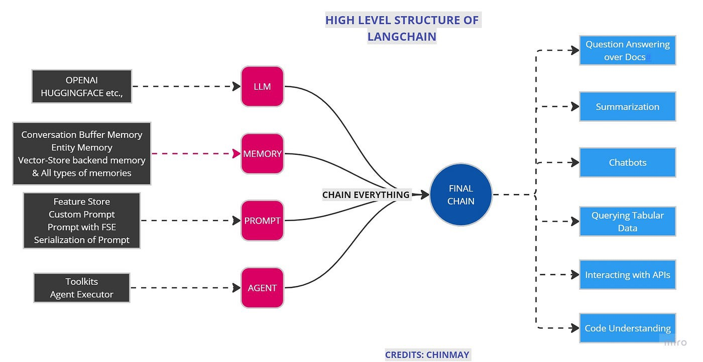
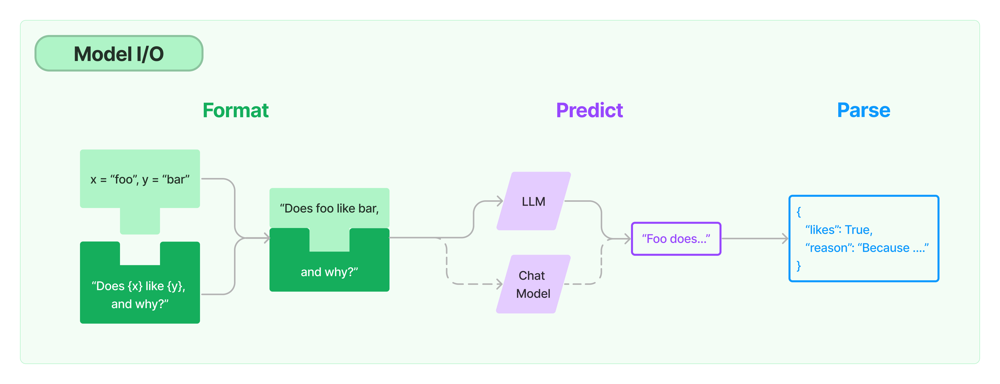
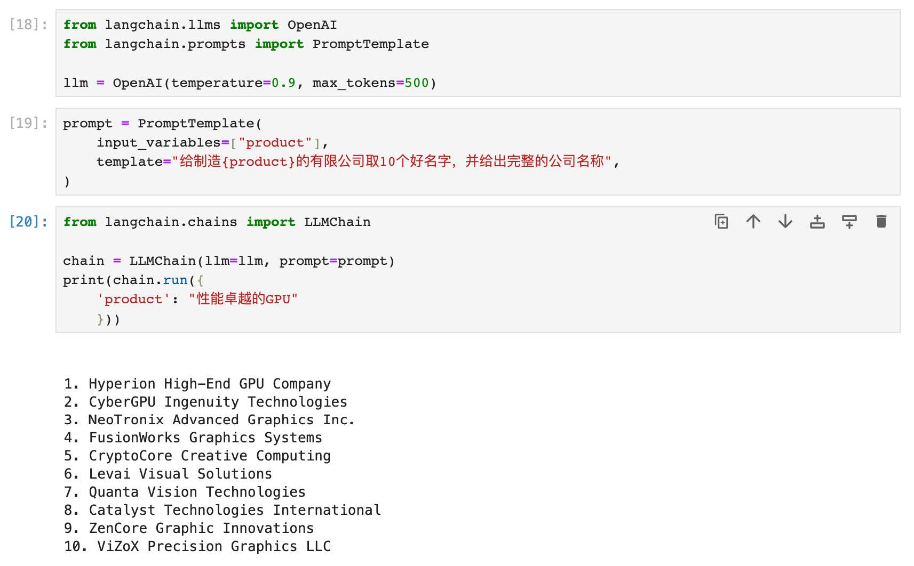

langchain
-
LangChain 101
- LangChain 是什么：通过组合模块和能力抽象来扩展 LLM 的助手
- 为什么需要 LangChain
- LangChain 典型使用场景
- LangChain 基础概念与模块化设计
-
LangChain 核心模块入门与实战
-
标准化的大模型抽象：Model I/O
- 模板化输入：Prompts
- 语言模型：Models
- 规范化输出：Output Parsers
-
-
大模型应用的最佳实践 Chains
- 上手你的第一个链：LLM Chain
- 串联式编排调用链：Sequential Chain
- 处理超长文本的转换链：Transform Chain
- 实现条件判断的路由链：Router Chain
-
赋予应用记忆的能力： Memory
-
Momory System 与 Chain 的关系
-
记忆基类 BaseMemory 与 BaseChatMessageMemory
-
服务聊天对话的记忆系统
- ConversationBufferMemory
- ConversationBufferWindowMemory
- ConversationSummaryBufferMemory
-
LangChain 核心模块入门与实战
标准化的大模型抽象：Model I/O
LangChain 核心模块学习：Model I/O
Model I/O 是 LangChain 为开发者提供的一套面向 LLM 的标准化模型接口，包括模型输入（Prompts）、模型输出（Output Parsers）和模型本身（Models）。
- Prompts：模板化、动态选择和管理模型输入
- Models：以通用接口调用语言模型
- Output Parser：从模型输出中提取信息，并规范化内容

! pip install -U langchain
模型抽象 Model
- 语言模型(LLMs): LangChain 的核心组件。LangChain并不提供自己的LLMs，而是为与许多不同的LLMs（OpenAI、Cohere、Hugging Face等）进行交互提供了一个标准接口。
- 聊天模型(Chat Models): 语言模型的一种变体。虽然聊天模型在内部使用了语言模型，但它们提供的接口略有不同。与其暴露一个“输入文本，输出文本”的API不同，它们提供了一个以“聊天消息”作为输入和输出的接口。
（注：对比 OpenAI Completion API和 Chat Completion API）
语言模型（LLMs)
类继承关系：
BaseLanguageModel --> BaseLLM --> LLM --> <name> # Examples: AI21, HuggingFaceHub, OpenAI
LLM 继承自 BaseLLM,BaseLLM 继承自 BaseLanguageModel.
主要抽象:
AgentType, AgentExecutor, AgentOutputParser, AgentExecutorIterator,
AgentAction, AgentFinish
API 参考文档: https://api.python.langchain.com/en/latest/langchain_api_reference.html
BaseLanguageModel Class
代码实现：https://github.com/langchain-ai/langchain/blob/master/libs/langchain/langchain/schema/language_model.py
这个基类为语言模型定义了一个接口，该接口允许用户以不同的方式与模型交互（例如通过提示或消息）。generate_prompt 是其中的一个主要方法，它接受一系列提示，并返回模型的生成结果。
# 定义 BaseLanguageModel 抽象基类，它从 Serializable, Runnable 和 ABC 继承
class BaseLanguageModel(
Serializable, Runnable[LanguageModelInput, LanguageModelOutput], ABC
):
"""
与语言模型交互的抽象基类。
所有语言模型的封装器都应从 BaseLanguageModel 继承。
主要提供三种方法：
- generate_prompt: 为一系列的提示值生成语言模型输出。提示值是可以转换为任何语言模型输入格式的模型输入（如字符串或消息）。
- predict: 将单个字符串传递给语言模型并返回字符串预测。
- predict_messages: 将一系列 BaseMessages（对应于单个模型调用）传递给语言模型，并返回 BaseMessage 预测。
每种方法都有对应的异步方法。
"""
# 定义一个抽象方法 generate_prompt，需要子类进行实现
@abstractmethod
def generate_prompt(
self,
prompts: List[PromptValue], # 输入提示的列表
stop: Optional[List[str]] = None, # 生成时的停止词列表
callbacks: Callbacks = None, # 回调，用于执行例如日志记录或流式处理的额外功能
**kwargs: Any, # 任意的额外关键字参数，通常会传递给模型提供者的 API 调用
) -> LLMResult:
"""
将一系列的提示传递给模型并返回模型的生成。
对于提供批处理 API 的模型，此方法应使用批处理调用。
使用此方法时：
1. 希望利用批处理调用，
2. 需要从模型中获取的输出不仅仅是最顶部生成的值，
3. 构建与底层语言模型类型无关的链（例如，纯文本完成模型与聊天模型）。
参数:
prompts: 提示值的列表。提示值是一个可以转换为与任何语言模型匹配的格式的对象（对于纯文本生成模型为字符串，对于聊天模型为 BaseMessages）。
stop: 生成时使用的停止词。模型输出在这些子字符串的首次出现处截断。
callbacks: 要传递的回调。用于执行额外功能，例如在生成过程中进行日志记录或流式处理。
**kwargs: 任意的额外关键字参数。通常这些会传递给模型提供者的 API 调用。
返回值:
LLMResult，它包含每个输入提示的候选生成列表以及特定于模型提供者的额外输出。
"""
BaseLLM Class
代码实现：https://github.com/langchain-ai/langchain/blob/master/libs/langchain/langchain/llms/base.py
这段代码定义了一个名为 BaseLLM 的抽象基类。这个基类的主要目的是提供一个基本的接口来处理大型语言模型 (LLM)。
# 定义 BaseLLM 抽象基类，它从 BaseLanguageModel[str] 和 ABC（Abstract Base Class）继承
class BaseLLM(BaseLanguageModel[str], ABC):
"""Base LLM abstract interface.
It should take in a prompt and return a string."""
# 定义可选的缓存属性，其初始值为 None
cache: Optional[bool] = None
# 定义 verbose 属性，该属性决定是否打印响应文本
# 默认值使用 _get_verbosity 函数的结果
verbose: bool = Field(default_factory=_get_verbosity)
"""Whether to print out response text."""
# 定义 callbacks 属性，其初始值为 None，并从序列化中排除
callbacks: Callbacks = Field(default=None, exclude=True)
# 定义 callback_manager 属性，其初始值为 None，并从序列化中排除
callback_manager: Optional[BaseCallbackManager] = Field(default=None, exclude=True)
# 定义 tags 属性，这些标签会被添加到运行追踪中，其初始值为 None，并从序列化中排除
tags: Optional[List[str]] = Field(default=None, exclude=True)
"""Tags to add to the run trace."""
# 定义 metadata 属性，这些元数据会被添加到运行追踪中，其初始值为 None，并从序列化中排除
metadata: Optional[Dict[str, Any]] = Field(default=None, exclude=True)
"""Metadata to add to the run trace."""
# 内部类定义了这个 pydantic 对象的配置
class Config:
"""Configuration for this pydantic object."""
# 允许使用任意类型
arbitrary_types_allowed = True
这个基类使用了 Pydantic 的功能，特别是 Field 方法，用于定义默认值和序列化行为。BaseLLM 的子类需要提供实现具体功能的方法。
LLM Class
代码实现：https://github.com/langchain-ai/langchain/blob/master/libs/langchain/langchain/llms/base.py
这段代码定义了一个名为 LLM 的类，该类继承自 BaseLLM。这个类的目的是为了为用户提供一个简化的接口来处理LLM（大型语言模型），而不期望用户实现完整的 _generate 方法。
# 继承自 BaseLLM 的 LLM 类
class LLM(BaseLLM):
"""Base LLM abstract class.
The purpose of this class is to expose a simpler interface for working
with LLMs, rather than expect the user to implement the full _generate method.
"""
# 使用 @abstractmethod 装饰器定义一个抽象方法，子类需要实现这个方法
@abstractmethod
def _call(
self,
prompt: str, # 输入提示
stop: Optional[List[str]] = None, # 停止词列表
run_manager: Optional[CallbackManagerForLLMRun] = None, # 运行管理器
**kwargs: Any, # 其他关键字参数
) -> str:
"""Run the LLM on the given prompt and input."""
# 此方法的实现应在子类中提供
# _generate 方法使用了 _call 方法，用于处理多个提示
def _generate(
self,
prompts: List[str], # 多个输入提示的列表
stop: Optional[List[str]] = None,
run_manager: Optional[CallbackManagerForLLMRun] = None,
**kwargs: Any,
) -> LLMResult:
"""Run the LLM on the given prompt and input."""
# TODO: 在此处添加缓存逻辑
generations = [] # 用于存储生成的文本
# 检查 _call 方法的签名是否支持 run_manager 参数
new_arg_supported = inspect.signature(self._call).parameters.get("run_manager")
for prompt in prompts: # 遍历每个提示
# 根据是否支持 run_manager 参数来选择调用方法
text = (
self._call(prompt, stop=stop, run_manager=run_manager, **kwargs)
if new_arg_supported
else self._call(prompt, stop=stop, **kwargs)
)
# 将生成的文本添加到 generations 列表中
generations.append([Generation(text=text)])
# 返回 LLMResult 对象，其中包含 generations 列表
return LLMResult(generations=generations)
LLMs 已支持模型清单
开发者文档：https://python.langchain.com/docs/integrations/llms/
代码实现：https://github.com/langchain-ai/langchain/tree/master/libs/langchain/langchain/llms
使用 LangChain 调用 OpenAI GPT Completion API
代码实现：https://github.com/langchain-ai/langchain/blob/master/libs/langchain/langchain/llms/openai.py
BaseOpenAI Class
class BaseOpenAI(BaseLLM):
"""OpenAI 大语言模型的基类。"""
@property
def lc_secrets(self) -> Dict[str, str]:
return {"openai_api_key": "OPENAI_API_KEY"}
@property
def lc_serializable(self) -> bool:
return True
client: Any #: :meta private:
model_name: str = Field("text-davinci-003", alias="model")
"""使用的模型名。"""
temperature: float = 0.7
"""要使用的采样温度。"""
max_tokens: int = 256
"""完成中生成的最大令牌数。
-1表示根据提示和模型的最大上下文大小返回尽可能多的令牌。"""
top_p: float = 1
"""在每一步考虑的令牌的总概率质量。"""
frequency_penalty: float = 0
"""根据频率惩罚重复的令牌。"""
presence_penalty: float = 0
"""惩罚重复的令牌。"""
n: int = 1
"""为每个提示生成多少完成。"""
best_of: int = 1
"""在服务器端生成best_of完成并返回“最佳”。"""
model_kwargs: Dict[str, Any] = Field(default_factory=dict)
"""保存任何未明确指定的`create`调用的有效模型参数。"""
openai_api_key: Optional[str] = None
openai_api_base: Optional[str] = None
openai_organization: Optional[str] = None
# 支持OpenAI的显式代理
openai_proxy: Optional[str] = None
batch_size: int = 20
"""传递多个文档以生成时使用的批处理大小。"""
request_timeout: Optional[Union[float, Tuple[float, float]]] = None
"""向OpenAI完成API的请求超时。 默认为600秒。"""
logit_bias: Optional[Dict[str, float]] = Field(default_factory=dict)
"""调整生成特定令牌的概率。"""
max_retries: int = 6
"""生成时尝试的最大次数。"""
streaming: bool = False
"""是否流式传输结果。"""
allowed_special: Union[Literal["all"], AbstractSet[str]] = set()
"""允许的特殊令牌集。"""
disallowed_special: Union[Literal["all"], Collection[str]] = "all"
"""不允许的特殊令牌集。"""
tiktoken_model_name: Optional[str] = None
"""使用此类时传递给tiktoken的模型名。
Tiktoken用于计算文档中的令牌数量以限制它们在某个限制以下。
默认情况下，设置为None时，这将与嵌入模型名称相同。
但是，在某些情况下，您可能希望使用此嵌入类与tiktoken不支持的模型名称。
这可以包括使用Azure嵌入或使用多个模型提供商的情况，这些提供商公开了类似OpenAI的API但模型不同。
在这些情况下，为了避免在调用tiktoken时出错，您可以在此处指定要使用的模型名称。"""
OpenAI LLM 模型默认使用 gpt-3.5-turbo-instruct
from langchain_openai import OpenAI
llm = OpenAI(model_name="gpt-3.5-turbo-instruct")
对比直接调用 OpenAI API：
from openai import OpenAI
client = OpenAI()
data = client.completions.create(
model="gpt-3.5-turbo-instruct",
prompt="Tell me a Joke",
)
print(llm.invoke("Tell me a Joke"))
print(llm.invoke("讲10个给程序员听得笑话"))
生成10个笑话，显然超过了 max_token 默认值
llm.max_tokens
# 修改 max_token 值为 1024
llm.max_tokens = 1024
llm.max_tokens
LangChain 的 LLM 抽象维护了 OpenAI 连接状态（参数设定）
result = llm.invoke("讲10个给程序员听得笑话")
print(result)
再次生成10个笑话时成功了，但是两次笑话不一样¶
将 temperature 参数设置为0（值越大生成多样性越高）
llm.temperature=0
result = llm.invoke("生成可执行的快速排序 Python 代码")
print(result)
使用 exec 定义 quick_sort 函数
exec(result)
调用 GPT 生成的快排代码，测试是否可用
print(quick_sort([3,6,8,10,1,2,1,1024]))
聊天模型（Chat Models)
类继承关系：
BaseLanguageModel --> BaseChatModel --> <name> # Examples: ChatOpenAI, ChatGooglePalm
主要抽象：
AIMessage, BaseMessage, HumanMessage
API 参考文档: https://api.python.langchain.com/en/latest/langchain_api_reference.html
BaseChatModel Class
代码实现：https://github.com/langchain-ai/langchain/blob/master/libs/langchain/langchain/chat_models/base.py
class BaseChatModel(BaseLanguageModel[BaseMessageChunk], ABC):
cache: Optional[bool] = None
"""是否缓存响应。"""
verbose: bool = Field(default_factory=_get_verbosity)
"""是否打印响应文本。"""
callbacks: Callbacks = Field(default=None, exclude=True)
"""添加到运行追踪的回调函数。"""
callback_manager: Optional[BaseCallbackManager] = Field(default=None, exclude=True)
"""添加到运行追踪的回调函数管理器。"""
tags: Optional[List[str]] = Field(default=None, exclude=True)
"""添加到运行追踪的标签。"""
metadata: Optional[Dict[str, Any]] = Field(default=None, exclude=True)
"""添加到运行追踪的元数据。"""
# 需要子类实现的 _generate 抽象方法
@abstractmethod
def _generate(
self,
messages: List[BaseMessage],
stop: Optional[List[str]] = None,
run_manager: Optional[CallbackManagerForLLMRun] = None,
**kwargs: Any,
) -> ChatResult:
ChatOpenAI Class（调用 Chat Completion API）
代码实现：https://github.com/langchain-ai/langchain/blob/master/libs/langchain/langchain/chat_models/openai.py
class ChatOpenAI(BaseChatModel):
"""OpenAI Chat大语言模型的包装器。
要使用，您应该已经安装了``openai`` python包，并且
环境变量``OPENAI_API_KEY``已使用您的API密钥进行设置。
即使未在此类上明确保存，也可以传入任何有效的参数
至openai.create调用。
"""
@property
def lc_secrets(self) -> Dict[str, str]:
return {"openai_api_key": "OPENAI_API_KEY"}
@property
def lc_serializable(self) -> bool:
return True
client: Any = None #: :meta private:
model_name: str = Field(default="gpt-3.5-turbo", alias="model")
"""要使用的模型名。"""
temperature: float = 0.7
"""使用的采样温度。"""
model_kwargs: Dict[str, Any] = Field(default_factory=dict)
"""保存任何未明确指定的`create`调用的有效模型参数。"""
openai_api_key: Optional[str] = None
"""API请求的基础URL路径，
如果不使用代理或服务仿真器，请留空。"""
openai_api_base: Optional[str] = None
openai_organization: Optional[str] = None
# 支持OpenAI的显式代理
openai_proxy: Optional[str] = None
request_timeout: Optional[Union[float, Tuple[float, float]]] = None
"""请求OpenAI完成API的超时。默认为600秒。"""
max_retries: int = 6
"""生成时尝试的最大次数。"""
streaming: bool = False
"""是否流式传输结果。"""
n: int = 1
"""为每个提示生成的聊天完成数。"""
max_tokens: Optional[int] = None
"""生成的最大令牌数。"""
tiktoken_model_name: Optional[str] = None
"""使用此类时传递给tiktoken的模型名称。
Tiktoken用于计算文档中的令牌数以限制
它们在某个限制之下。默认情况下，当设置为None时，这将
与嵌入模型名称相同。但是，在某些情况下，
您可能希望使用此嵌入类，模型名称不
由tiktoken支持。这可能包括使用Azure嵌入或
使用其中之一的多个模型提供商公开类似OpenAI的
API但模型不同。在这些情况下，为了避免在调用tiktoken时出错，
您可以在这里指定要使用的模型名称。"""
from langchain_openai import ChatOpenAI
chat_model = ChatOpenAI(model_name="gpt-3.5-turbo")
对比调用 OpenAI API：
import openai
data = openai.ChatCompletion.create(
model="gpt-3.5-turbo",
messages=[
{"role": "system", "content": "You are a helpful assistant."},
{"role": "user", "content": "Who won the world series in 2020?"},
{"role": "assistant", "content": "The Los Angeles Dodgers won the World Series in 2020."},
{"role": "user", "content": "Where was it played?"}
]
)
from langchain.schema import (
AIMessage,
HumanMessage,
SystemMessage
)
messages = [SystemMessage(content="You are a helpful assistant."),
HumanMessage(content="Who won the world series in 2020?"),
AIMessage(content="The Los Angeles Dodgers won the World Series in 2020."),
HumanMessage(content="Where was it played?")]
print(messages)
chat_model.invoke(messages)
chat_result = chat_model.invoke(messages)
type(chat_result)
模型输入 Prompts
一个语言模型的提示是用户提供的一组指令或输入，用于引导模型的响应，帮助它理解上下文并生成相关和连贯的基于语言的输出，例如回答问题、完成句子或进行对话。
- 提示模板（Prompt Templates）：参数化的模型输入
- 示例选择器（Example Selectors）：动态选择要包含在提示中的示例
提示模板 Prompt Templates
Prompt Templates 提供了一种预定义、动态注入、模型无关和参数化的提示词生成方式，以便在不同的语言模型之间重用模板。
一个模板可能包括指令、少量示例以及适用于特定任务的具体背景和问题。
通常，提示要么是一个字符串（LLMs），要么是一组聊天消息（Chat Model）。
类继承关系:
BasePromptTemplate --> PipelinePromptTemplate
StringPromptTemplate --> PromptTemplate
FewShotPromptTemplate
FewShotPromptWithTemplates
BaseChatPromptTemplate --> AutoGPTPrompt
ChatPromptTemplate --> AgentScratchPadChatPromptTemplate
BaseMessagePromptTemplate --> MessagesPlaceholder
BaseStringMessagePromptTemplate --> ChatMessagePromptTemplate
HumanMessagePromptTemplate
AIMessagePromptTemplate
SystemMessagePromptTemplate
PromptValue --> StringPromptValue
ChatPromptValue
代码实现：https://github.com/langchain-ai/langchain/blob/master/libs/langchain/langchain/prompts
使用 PromptTemplate 类生成提升词
通常，PromptTemplate 类的实例，使用Python的str.format语法生成模板化提示；也可以使用其他模板语法（例如jinja2）。
使用 from_template 方法实例化 PromptTemplate
from langchain import PromptTemplate
prompt_template = PromptTemplate.from_template(
"Tell me a {adjective} joke about {content}."
)
# 使用 format 生成提示
prompt = prompt_template.format(adjective="funny", content="chickens")
print(prompt)
# 输出
Tell me a funny joke about chickens.
print(prompt_template)
# 输出
input_variables=['adjective', 'content'] template='Tell me a {adjective} joke about {content}.'
prompt_template = PromptTemplate.from_template(
"Tell me a joke"
)
# 生成提示
prompt = prompt_template.format()
print(prompt)
Tell me a joke
使用构造函数（Initializer）实例化 PromptTemplate
使用构造函数实例化 prompt_template 时必须传入参数：input_variables 和 template。
在生成提示过程中，会检查输入变量与模板字符串中的变量是否匹配，如果不匹配，则会引发异常；
invalid_prompt = PromptTemplate(
input_variables=["adjective"],
template="Tell me a {adjective} joke about {content}."
)
传入 content 后才能生成可用的 prompt
valid_prompt = PromptTemplate(
input_variables=["adjective", "content"],
template="Tell me a {adjective} joke about {content}."
)
print(valid_prompt)
input_variables=['adjective', 'content'] template='Tell me a {adjective} joke about {content}.'
valid_prompt.format(adjective="funny", content="chickens")
'Tell me a funny joke about chickens.'
prompt_template = PromptTemplate.from_template(
"讲{num}个给程序员听得笑话"
)
from langchain_openai import OpenAI
llm = OpenAI(model_name="gpt-3.5-turbo-instruct", max_tokens=1000)
prompt = prompt_template.format(num=2)
print(f"prompt: {prompt}")
result = llm.invoke(prompt)
print(f"result: {result}")
prompt: 讲2个给程序员听得笑话
result:
- 为什么程序员喜欢用黑客帝国里的人物作为用户名？因为他们喜欢用Neo、Trinity、Morpheus来重置密码。
- 有一个程序员去买牛奶，店员问他需要几瓶，他回答说：“我只需要一个容器，容量为1L，里面装满牛奶即可。”
print(llm.invoke(prompt_template.format(num=3)))
- 为什么程序员喜欢用黑客帝国里的绿色数字做桌面壁纸？因为那样可以让电脑跑得更快。
- 为什么程序员总是喜欢喝咖啡？因为咖啡是唯一能让他们的代码跑得更快的饮料。
- 一个程序员去参加面试，面试官问他："如果你有10个苹果，你能用什么方法把它们平均分成5份？"程序员回答："简单，我把苹果放进数组里，然后用循环把它们分成5份就可以了。"面试官深思熟虑后说："那如果我只给你9个苹果呢？"程序员回答："那就给我一个苹果，然后让我再写一个循环。"
使用 jinja2 生成模板化提示
jinja2_template = "Tell me a {{ adjective }} joke about {{ content }}"
prompt = PromptTemplate.from_template(jinja2_template, template_format="jinja2")
prompt.format(adjective="funny", content="chickens")
'Tell me a funny joke about chickens'
print(prompt)
input_variables=['adjective', 'content'] template='Tell me a {{ adjective }} joke about {{ content }}' template_format='jinja2'
实测：生成多种编程语言版本的快速排序
sort_prompt_template = PromptTemplate.from_template(
"生成可执行的快速排序 {programming_language} 代码"
)
print(llm.invoke(sort_prompt_template.format(programming_language="python")))
print(llm.invoke(sort_prompt_template.format(programming_language="java")))
print(llm.invoke(sort_prompt_template.format(programming_language="C++")))
使用 ChatPromptTemplate 类生成适用于聊天模型的聊天记录
ChatPromptTemplate 类的实例，使用format_messages方法生成适用于聊天模型的提示。
使用 from_messages 方法实例化 ChatPromptTemplate
from langchain.prompts import ChatPromptTemplate
template = ChatPromptTemplate.from_messages([
("system", "You are a helpful AI bot. Your name is {name}."),
("human", "Hello, how are you doing?"),
("ai", "I'm doing well, thanks!"),
("human", "{user_input}"),
])
# 生成提示
messages = template.format_messages(
name="Bob",
user_input="What is your name?"
)
print(messages)
print(messages[0].content)
print(messages[-1].content)
from langchain_openai import ChatOpenAI
chat_model = ChatOpenAI(model_name="gpt-3.5-turbo", max_tokens=1000)
chat_model.invoke(messages)
summary_template = ChatPromptTemplate.from_messages([
("system", "你将获得关于同一主题的{num}篇文章（用-----------标签分隔）。首先总结每篇文章的论点。然后指出哪篇文章提出了更好的论点，并解释原因。"),
("human", "{user_input}"),
])
messages = summary_template.format_messages(
num=3,
user_input='''1. [PHP是世界上最好的语言]
PHP是世界上最好的情感派编程语言，无需逻辑和算法，只要情绪。它能被蛰伏在冰箱里的PHP大神轻易驾驭，会话结束后的感叹号也能传达对代码的热情。写PHP就像是在做披萨，不需要想那么多，只需把配料全部扔进一个碗，然后放到服务器上，热乎乎出炉的网页就好了。
-----------
2. [Python是世界上最好的语言]
Python是世界上最好的拜金主义者语言。它坚信：美丽就是力量，简洁就是灵魂。Python就像是那个永远在你皱眉的那一刻扔给你言情小说的好友。只有Python，你才能够在两行代码之间感受到飘逸的花香和清新的微风。记住，这世上只有一种语言可以使用空格来领导全世界的进步，那就是Python。
-----------
3. [Java是世界上最好的语言]
Java是世界上最好的德育课编程语言，它始终坚守了严谨、安全的编程信条。Java就像一个严格的老师，他不会对你怀柔，不会让你偷懒，也不会让你走捷径，但他教会你规范和自律。Java就像是那个喝咖啡也算加班费的上司，拥有对邪恶的深度厌恶和对善良的深度拥护。
'''
)
print(messages[-1].content)
chat_result = chat_model.invoke(messages)
print(chat_result.content)
messages = summary_template.format_messages(
num=2,
user_input='''1.认为“道可道”中的第一个“道”，指的是道理，如仁义礼智之类；“可道”中的“道”，指言说的意思；“常道”，指恒久存在的“道”。因此，所谓“道可道，非常道”，指的是可以言说的道理，不是恒久存在的“道”，恒久存在的“道”不可言说。如苏辙说：“莫非道也。而可道者不可常，惟不可道，而后可常耳。今夫仁义礼智，此道之可道者也。然而仁不可以为义，而礼不可以为智，可道之不可常如此。……而道常不变，不可道之能常如此。”蒋锡昌说：“此道为世人所习称之道，即今人所谓‘道理’也，第一‘道’字应从是解。《广雅·释诂》二：‘道，说也’，第二‘道’字应从是解。‘常’乃真常不易之义，在文法上为区别词。……第三‘道’字即二十五章‘道法自然’之‘道’，……乃老子学说之总名也”。陈鼓应说：“第一个‘道’字是人们习称之道，即今人所谓‘道理’。第二个‘道’字，是指言说的意思。第三个‘道’字，是老子哲学上的专有名词，在本章它意指构成宇宙的实体与动力。……‘常道’之‘常’，为真常、永恒之意。……可以用言词表达的道，就不是常道”。
-----------
2.认为“道可道”中的第一个“道”，指的是宇宙万物的本原；“可道”中的“道”，指言说的意思；“常道”，指恒久存在的“道”。因此，“道可道，非常道”，指可以言说的“道”，就不是恒久存在的“道”。如张默生说：“‘道’，指宇宙的本体而言。……‘常’，是经常不变的意思。……可以说出来的道，便不是经常不变的道”。董平说：“第一个‘道’字与‘可道’之‘道’，内涵并不相同。第一个‘道’字，是老子所揭示的作为宇宙本根之‘道’；‘可道’之‘道’，则是‘言说’的意思。……这里的大意就是说：凡一切可以言说之‘道’，都不是‘常道’或永恒之‘道’”。汤漳平等说：“第一句中的三个‘道’，第一、三均指形上之‘道’，中间的‘道’作动词，为可言之义。……道可知而可行，但非恒久不变之道”。
--------
3.认为“道可道”中的第一个“道”，指的是宇宙万物的本原；“可道”中的“道”，指言说的意思；“常道”，则指的是平常人所讲之道、常俗之道。因此，“道可道，非常道”，指“道”是可以言说的，但它不是平常人所谓的道或常俗之道。如李荣说：“道者，虚极之理也。夫论虚极之理，不可以有无分其象，不可以上下格其真。……圣人欲坦兹玄路，开以教门，借圆通之名，目虚极之理，以理可名，称之可道。故曰‘吾不知其名，字之曰道’。非常道者，非是人间常俗之道也。人间常俗之道，贵之以礼义，尚之以浮华，丧身以成名，忘己而徇利。”司马光说：“世俗之谈道者，皆曰道体微妙，不可名言。老子以为不然，曰道亦可言道耳，然非常人之所谓道也。……常人之所谓道者，凝滞于物。”裘锡圭说：“到目前为止，可以说，几乎从战国开始，大家都把‘可道’之‘道’……看成老子所否定的，把‘常道’‘常名’看成老子所肯定的。这种看法其实有它不合理的地方，……‘道’是可以说的。《老子》这个《道经》第一章，开宗明义是要讲他的‘道’。第一个‘道’字，理所应当，也是讲他要讲的‘道’：道是可以言说的。……那么这个‘恒’字应该怎么讲？我认为很简单，‘恒’字在古代作定语用，经常是‘平常’‘恒常’的意思。……‘道’是可以言说的，但是我要讲的这个‘道’，不是‘恒道’，它不是一般人所讲的‘道’。
'''
)
print(messages)
chat_result = chat_model.invoke(messages)
print(chat_result.content)
messages = summary_template.format_messages(
num=2,
user_input='''1.认为“道可道”中的第一个“道”，指的是道理，如仁义礼智之类；“可道”中的“道”，指言说的意思；“常道”，指恒久存在的“道”。因此，所谓“道可道，非常道”，指的是可以言说的道理，不是恒久存在的“道”，恒久存在的“道”不可言说。如苏辙说：“莫非道也。而可道者不可常，惟不可道，而后可常耳。今夫仁义礼智，此道之可道者也。然而仁不可以为义，而礼不可以为智，可道之不可常如此。……而道常不变，不可道之能常如此。”蒋锡昌说：“此道为世人所习称之道，即今人所谓‘道理’也，第一‘道’字应从是解。《广雅·释诂》二：‘道，说也’，第二‘道’字应从是解。‘常’乃真常不易之义，在文法上为区别词。……第三‘道’字即二十五章‘道法自然’之‘道’，……乃老子学说之总名也”。陈鼓应说：“第一个‘道’字是人们习称之道，即今人所谓‘道理’。第二个‘道’字，是指言说的意思。第三个‘道’字，是老子哲学上的专有名词，在本章它意指构成宇宙的实体与动力。……‘常道’之‘常’，为真常、永恒之意。……可以用言词表达的道，就不是常道”。
-----------
2.认为“道可道”中的第一个“道”，指的是宇宙万物的本原；“可道”中的“道”，指言说的意思；“常道”，指恒久存在的“道”。因此，“道可道，非常道”，指可以言说的“道”，就不是恒久存在的“道”。如张默生说：“‘道’，指宇宙的本体而言。……‘常’，是经常不变的意思。……可以说出来的道，便不是经常不变的道”。董平说：“第一个‘道’字与‘可道’之‘道’，内涵并不相同。第一个‘道’字，是老子所揭示的作为宇宙本根之‘道’；‘可道’之‘道’，则是‘言说’的意思。……这里的大意就是说：凡一切可以言说之‘道’，都不是‘常道’或永恒之‘道’”。汤漳平等说：“第一句中的三个‘道’，第一、三均指形上之‘道’，中间的‘道’作动词，为可言之义。……道可知而可行，但非恒久不变之道”。
'''
)
chat_result = chat_model.invoke(messages)
print(chat_result.content)
使用 FewShotPromptTemplate 类生成 Few-shot Prompt
构造 few-shot prompt 的方法通常有两种：
- 从示例集（set of examples）中手动选择；
- 通过示例选择器（Example Selector）自动选择.
from langchain.prompts.prompt import PromptTemplate
examples = [
{
"question": "谁活得更久，穆罕默德·阿里还是艾伦·图灵？",
"answer":
"""
这里需要进一步的问题吗：是的。
追问：穆罕默德·阿里去世时多大了？
中间答案：穆罕默德·阿里去世时74岁。
追问：艾伦·图灵去世时多大了？
中间答案：艾伦·图灵去世时41岁。
所以最终答案是：穆罕默德·阿里
"""
},
{
"question": "craigslist的创始人是什么时候出生的？",
"answer":
"""
这里需要进一步的问题吗：是的。
追问：谁是craigslist的创始人？
中间答案：Craigslist是由Craig Newmark创办的。
追问：Craig Newmark是什么时候出生的？
中间答案：Craig Newmark出生于1952年12月6日。
所以最终答案是：1952年12月6日
"""
},
{
"question": "乔治·华盛顿的外祖父是谁？",
"answer":
"""
这里需要进一步的问题吗：是的。
追问：谁是乔治·华盛顿的母亲？
中间答案：乔治·华盛顿的母亲是Mary Ball Washington。
追问：Mary Ball Washington的父亲是谁？
中间答案：Mary Ball Washington的父亲是Joseph Ball。
所以最终答案是：Joseph Ball
"""
},
{
"question": "《大白鲨》和《皇家赌场》的导演是同一个国家的吗？",
"answer":
"""
这里需要进一步的问题吗：是的。
追问：谁是《大白鲨》的导演？
中间答案：《大白鲨》的导演是Steven Spielberg。
追问：Steven Spielberg来自哪里？
中间答案：美国。
追问：谁是《皇家赌场》的导演？
中间答案：《皇家赌场》的导演是Martin Campbell。
追问：Martin Campbell来自哪里？
中间答案：新西兰。
所以最终答案是：不是
"""
}
]
example_prompt = PromptTemplate(
input_variables=["question", "answer"],
template="Question: {question}\n{answer}"
)
# **examples[0] 是将examples[0] 字典的键值对（question-answer）解包并传递给format，作为函数参数
print(example_prompt.format(**examples[0]))
print(example_prompt)
print(example_prompt.format(**examples[-1]))
关于解包的示例
def print_info(question, answer):
print(f"Question: {question}")
print(f"Answer: {answer}")
print_info(**examples[0])
生成 Few-shot Prompt
# 导入 FewShotPromptTemplate 类
from langchain.prompts.few_shot import FewShotPromptTemplate
# 创建一个 FewShotPromptTemplate 对象
few_shot_prompt = FewShotPromptTemplate(
examples=examples, # 使用前面定义的 examples 作为范例
example_prompt=example_prompt, # 使用前面定义的 example_prompt 作为提示模板
suffix="Question: {input}", # 后缀模板，其中 {input} 会被替换为实际输入
input_variables=["input"] # 定义输入变量的列表
)
# 使用给定的输入格式化 prompt，并打印结果
# 这里的 {input} 将被 "玛丽·波尔·华盛顿的父亲是谁?" 替换
print(few_shot_prompt.format(input="玛丽·波尔·华盛顿的父亲是谁?"))
示例选择器 Example Selectors
如果你有大量的参考示例，就得选择哪些要包含在提示中。最好还是根据某种条件或者规则来自动选择，Example Selector 是负责这个任务的类。
BaseExampleSelector 定义如下：
class BaseExampleSelector(ABC):
"""用于选择包含在提示中的示例的接口。"""@abstractmethod
def select_examples(self, input_variables: Dict[str, str]) -> List[dict]:
"""根据输入选择要使用的示例。"""
ABC 是 Python 中的 abc 模块中的一个缩写，它表示 "Abstract Base Class"（抽象基类）。在 Python 中，抽象基类用于定义其他类必须遵循的基本接口或蓝图，但不能直接实例化。其主要目的是为了提供一种形式化的方式来定义和检查子类的接口。
使用抽象基类的几点关键信息：
- 抽象方法：在抽象基类中，你可以定义抽象方法，它没有实现（也就是说，它没有方法体）。任何继承该抽象基类的子类都必须提供这些抽象方法的实现。
- 不能直接实例化：你不能直接创建抽象基类的实例。试图这样做会引发错误。它们的主要目的是为了被继承，并在子类中实现其方法。
- 强制子类实现：如果子类没有实现所有的抽象方法，那么试图实例化该子类也会引发错误。这确保了继承抽象基类的所有子类都遵循了预定的接口。
# 导入需要的模块和类
from langchain.prompts.example_selector import SemanticSimilarityExampleSelector
from langchain.vectorstores import Chroma
from langchain_openai import OpenAIEmbeddings
from langchain.prompts import FewShotPromptTemplate, PromptTemplate
# 定义一个提示模板
example_prompt = PromptTemplate(
input_variables=["input", "output"], # 输入变量的名字
template="Input: {input}\nOutput: {output}", # 实际的模板字符串
)
# 这是一个假设的任务示例列表，用于创建反义词
examples = [
{"input": "happy", "output": "sad"},
{"input": "tall", "output": "short"},
{"input": "energetic", "output": "lethargic"},
{"input": "sunny", "output": "gloomy"},
{"input": "windy", "output": "calm"},
]
Pandas 相关包首次导入错误后，再次执行即可正确导入
# 从给定的示例中创建一个语义相似性选择器
example_selector = SemanticSimilarityExampleSelector.from_examples(
examples, # 可供选择的示例列表
OpenAIEmbeddings(), # 用于生成嵌入向量的嵌入类，用于衡量语义相似性
Chroma, # 用于存储嵌入向量并进行相似性搜索的 VectorStore 类
k=1 # 要生成的示例数量
)
# 创建一个 FewShotPromptTemplate 对象
similar_prompt = FewShotPromptTemplate(
example_selector=example_selector, # 提供一个 ExampleSelector 替代示例
example_prompt=example_prompt, # 前面定义的提示模板
prefix="Give the antonym of every input", # 前缀模板
suffix="Input: {adjective}\nOutput:", # 后缀模板
input_variables=["adjective"], # 输入变量的名字
)
# 输入是一种感受，所以应该选择 happy/sad 的示例。
print(similar_prompt.format(adjective="worried"))
# 输入是一种度量，所以应该选择 tall/short的示例。
print(similar_prompt.format(adjective="long"))
print(similar_prompt.format(adjective="rain"))
输出解析器 Output Parser
语言模型的输出是文本。
但很多时候，您可能希望获得比纯文本更结构化的信息。这就是输出解析器的价值所在。
输出解析器是帮助结构化语言模型响应的类。它们必须实现两种主要方法：
- "获取格式指令"：返回一个包含有关如何格式化语言模型输出的字符串的方法。
- "解析"：接受一个字符串（假设为来自语言模型的响应），并将其解析成某种结构。
然后还有一种可选方法：
- "使用提示进行解析"：接受一个字符串（假设为来自语言模型的响应）和一个提示（假设为生成此响应的提示），并将其解析成某种结构。在需要重新尝试或修复输出，并且需要从提示中获取信息以执行此操作时，通常会提供提示。
列表解析 List Parser
当您想要返回一个逗号分隔的项目列表时，可以使用此输出解析器。
from langchain.output_parsers import CommaSeparatedListOutputParser
from langchain.prompts import PromptTemplate, ChatPromptTemplate, HumanMessagePromptTemplate
from langchain_openai import OpenAI
# 创建一个输出解析器，用于处理带逗号分隔的列表输出
output_parser = CommaSeparatedListOutputParser()
# 获取格式化指令，该指令告诉模型如何格式化其输出
format_instructions = output_parser.get_format_instructions()
# 创建一个提示模板，它会基于给定的模板和变量来生成提示
prompt = PromptTemplate(
template="List five {subject}.\n{format_instructions}", # 模板内容
input_variables=["subject"], # 输入变量
partial_variables={"format_instructions": format_instructions} # 预定义的变量，这里我们传入格式化指令
)
# 使用提示模板和给定的主题来格式化输入
_input = prompt.format(subject="ice cream flavors")
print(_input)
llm = OpenAI(temperature=0)
output = llm.invoke(_input)
print(output)
# 使用之前创建的输出解析器来解析模型的输出
output_parser.parse(output)
日期解析 Datatime Parser
from langchain.output_parsers import DatetimeOutputParser
from langchain.chains import LLMChain
output_parser = DatetimeOutputParser()
template = """Answer the users question:
{question}
{format_instructions}"""
prompt = PromptTemplate.from_template(
template,
partial_variables={"format_instructions": output_parser.get_format_instructions()},
)
print(prompt)
print(prompt.format(question="around when was bitcoin founded?"))
llm = OpenAI()
chain = prompt | llm
output = chain.invoke("around when was bitcoin founded?")
print(output)
output_parser.parse(output)
print(output_parser.parse(output))
大模型应用的最佳实践 Chains

LLMChain: 整合语言模型和提示模板的最简单链

LLMChain 公司取名

SequentialChain: 串联式调用语言模型链
串联式调用语言模型（将一个调用的输出作为另一个调用的输入）。
顺序链（Sequential Chain ）允许用户连接多个链并将它们组合成执行特定场景的流水线（Pipeline）。有两种类型的顺序链：
- SimpleSequentialChain：最简单形式的顺序链，每个步骤都具有单一输入/输出，并且一个步骤的输出是下一个步骤的输入。
- SequentialChain：更通用形式的顺序链，允许多个输入/输出。